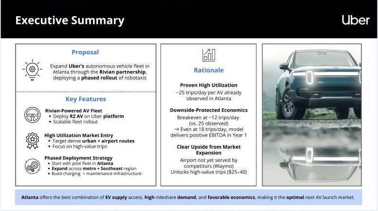
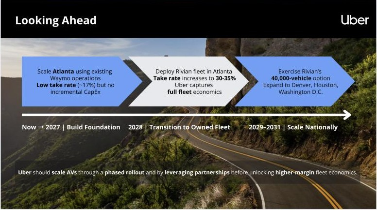
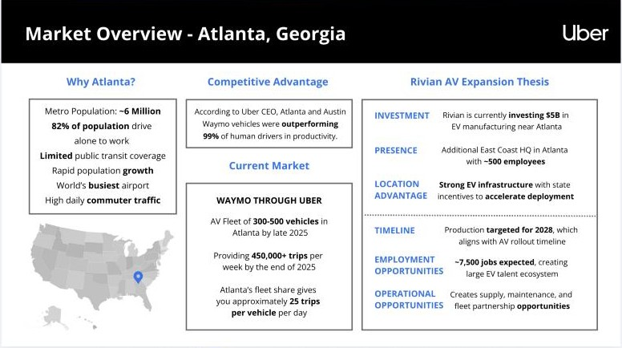
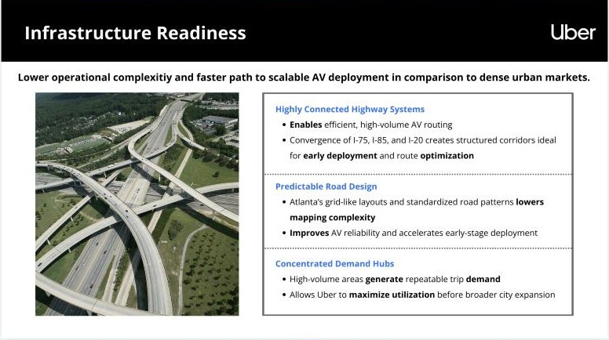
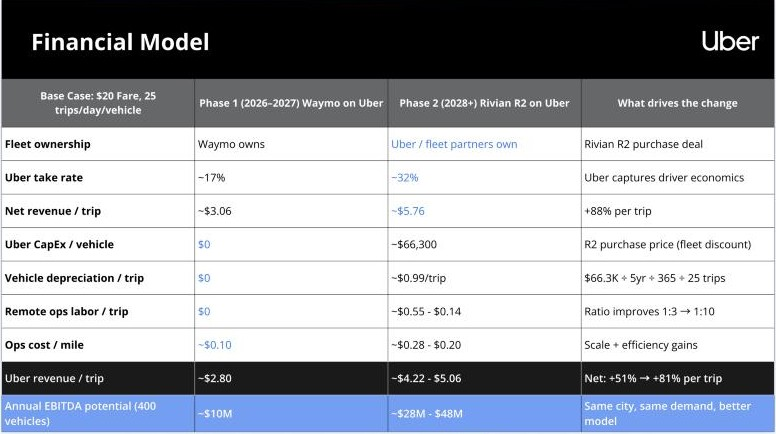
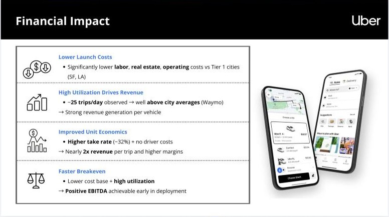

Case file · Strategy + Finance
Uber AV Strategy
Uber asked whether to take its autonomous vehicles to a new city or make them more profitable where they already run. Our answer was Atlanta, through a phased rollout that starts on Waymo’s fleet already running there and moves to a Rivian R2 fleet that Uber owns. It took first place.
§ 01 · The brief
Expand to a new city, or make the current ones pay?
The prompt asked where Uber should prioritise investment in autonomous vehicles, and why. A full answer had to cover strategy and market, operations, financial impact, and financial reporting.
The judges wanted a clear decision, not just analysis, with strong links between strategy, operations, and the financial outcome.
§ 02 · The recommendation
Atlanta, in three phases.
Start with low capital on a partner’s fleet, then move to owned-fleet economics once the vehicles exist.
-
Now to 2027: build the foundation
Scale Atlanta on Waymo’s existing operations. Uber’s take rate stays low, at about 17%, but there is no new capital spending.
-
2028: move to an owned fleet
Deploy Rivian R2 vehicles in Atlanta. The take rate rises to 30–35%, and Uber captures the full economics of the fleet.
-
2029 to 2031: scale nationally
Exercise the option on 40,000 Rivian vehicles and expand to Denver, Houston, and Washington, D.C.


§ 03 · Why Atlanta
The demand is proven, and the supply is nearby.
-
Utilization already observed.
Waymo on Uber in Atlanta runs at about 25 trips per vehicle per day, and Uber’s CEO said Atlanta and Austin Waymo vehicles outperformed 99% of human drivers on productivity.
-
High-friction travel.
A metro of about 6 million people, 82% of whom drive alone to work, and more than 261 million hours lost to delays a year. The world’s busiest airport isn’t served by Waymo yet, which opens up $25–40 trips.
-
An EV supply chain next door.
Rivian is investing $5 billion in EV manufacturing near Atlanta, with production targeted for 2028 and about 7,500 jobs expected. Being close to Rivian and its regional parts network cuts fleet acquisition costs and downtime.
-
Roads that suit early AVs.
I-75, I-85, and I-20 meet in structured corridors, and grid-like layouts lower mapping complexity. Labor, real estate, and operating costs are also lower than in San Francisco or Los Angeles.


§ 04 · The numbers
Same city, same demand, a better model.
The base case assumes a $20 fare and 25 trips per vehicle per day. On Waymo’s fleet, Uber keeps about 17%, or about $3.06 of net revenue per trip. With an owned Rivian R2 fleet at about $66,300 per vehicle, the take rate rises to about 32% and net revenue to about $5.76 per trip, up 88%. For a 400-vehicle fleet, annual EBITDA potential rises from about $10 million to $28–48 million.
Breakeven sits at about 12 trips a day, well under the 25 already observed. The interactive model behind these figures has four views: an Atlanta baseline built from Waymo network data, the phase 1 to phase 2 bridge, a full P&L, and a sensitivity grid of trips per day against take rate.


§ 05 · Risks
Three risks, each with a mitigant.
-
Riders adopt slowly.
Offer AVs as an optional ride type inside the existing Uber app, so trust builds gradually.
-
Regulation is uncertain.
Lean on Georgia’s AV-friendly rules and Uber’s earlier AV partnerships to move through compliance faster.
-
Sprawl raises coverage costs.
Start in high-density corridors, the urban core and airport routes, and maximize utilization there before expanding outward.
§ 06 · How it landed
First place, and one note for next time.
The judges pointed to the utilization anchor, about 25 trips a day against a breakeven of about 12, and to how the case tied Atlanta’s airport, Rivian’s supply chain, and its talent pool together. They also singled out the bridge from today’s Waymo economics to a Rivian-owned fleet, and a roadmap that linked feasibility to financial outcomes.
Their one suggestion: say more about running across many cities, from regulatory differences to the pace of infrastructure rollout.